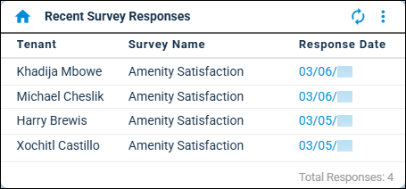
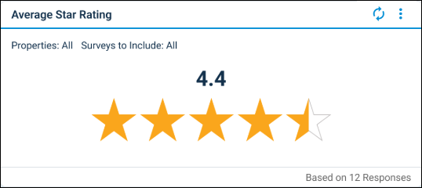
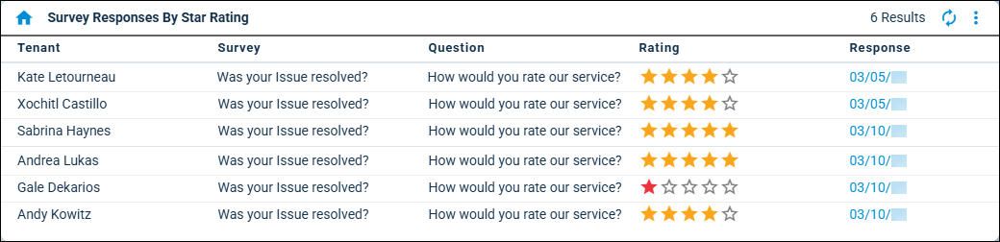
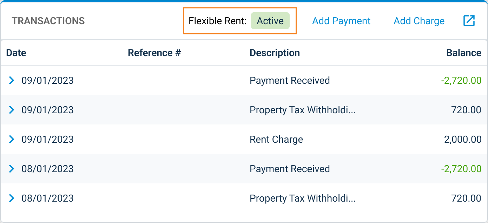

Source: https://rmxhelp.rentmanager.com/Topics/Express/Release-Notes/2025/12.2503.htm
12.250300 Release Notes
The release begins rolling out on March 18, 2025.
New Features
Use the new Survey tool to enhance your relationships with tenants and gain a better understanding of their renter experience!
Survey says—Getting tenant feedback has never been easier! The Survey tool was added, which allows you to quickly create and send custom surveys to gain insight and gather opinions from your tenants. Surveys can be sent automatically based on a predefined trigger (the closure of a maintenance ticket), or distributed manually as needed, ensuring flexibility in your data-collection frequency and timing. This tool makes receiving tenant feedback as convenient as possible, as surveys require no login or extensive time commitment from your tenants. Additionally, survey responses are automatically sent to Rent Manager, empowering you to quickly understand and act on your renter’s feedback.
For more information, refer to the Add and Activate a Survey topic in Express help.
As part of this update, the following changes were made:
-
The existing Polls functionality has been fully incorporated into Surveys, enabling you to use the Survey tool for voting, polling, and so on. To publish a poll from the Add Survey wizard, simply select Tenant as the Survey Type and Publish a one-time survey to TWA for a specific group of tenants in the Send Options tile. Additionally, Poll functionality was updated to include the ability to associate multiple properties with a single poll. For more information, refer to the Add and Publish a Survey to Tenant Web Access (TWA) topic in Express help.
-
To improve the way you gather feedback from your renters, the Add Survey wizard includes Survey Type options, which links surveys to a Tenant or Service Issue. The wizard also includes a Star Rating (1-5) question Response Type, which allows the tenant to select a response between one and five stars.
-
Surveys can now be sent from tenant and issue row actions, bulk actions, and right-click menus, as well as with one click from the
 Communication menu on Tenant and Issue details pages.
Communication menu on Tenant and Issue details pages. -
Survey Results were updated, making drilling down on responses, tracking analytics, and printing results much easier.
-
The Recent Survey Responses dashboard tile was added, which displays a list of tenants who have submitted responses to surveys within a set number of days. For more information, refer to the Recent Survey Responses (Dashboard Tile) topic in Express help.

-
The Average Star Rating dashboard tile was added, which provides a visual representation of your tenant’s average response to star-rating questions in surveys. For more information, refer to the Average Star Rating (Dashboard Tile) topic in Express help.

-
The Survey Responses By Star Rating dashboard tile was added, which allows you to easily identify, and quickly take action, on survey responses with a specific rating. For more information, refer to the Survey Response by Star Rating (Dashboard Tile) topic in Express help.

-
The Survey Link Expiring automated notification was added, which lets you automatically alert tenants prior to the expiration of a survey link they were sent. For more information, refer to the Survey Link Expiring (Automated Notification) topic in Express help.
-
The Survey Response Received automated notification was added, which notifies users when a tenant has responded to a survey. For more information, refer to the Survey Response Received (Automated Notification) topic in Express help.
-
The Service Issue Survey Ratings report was added, which allows you to see the average star rating of users assigned to service issues and the number of tenant responses for each selected issue as of a specified date range. For more information, refer to the Service Issue Survey Ratings (Report) topic in Express help.
-
The Sent Surveys report was added, which allows you to quickly identify which tenants have responded to selected surveys and verify the email and/or phone number the survey was sent to as of a specified date range. For more information, refer to the Sent Surveys (Report) topic in Express help.
Transform your rent quote process with our latest enhancements!
The Rent Quotes tool was added, enabling you to handle your rent offers with seamless efficiency. This new tool streamlines the process for storing and communicating rent quote information, incorporating applications, screenings, and recurring charges. This update fully integrates with your leasing workflow, making it easy for you to start tracking rent quotes without disrupting your current leasing process.
As part of this update, the following changes were made:
-
The Tenants/Prospects privilege group was updated with a Rent Quotes privilege, which grants the user the ability to Add, Edit, and/or Delete rent quotes.
-
The Tenant Web Access Apply Now General system web preferences were updated with a Prospect Rent Quotes section, which allows you create a rent quote using a unit’s market rent and set the default expiration date used on rent quotes created from Apply Now.
-
The Prospect details page was updated with a Rent Quotes tile that displays information on the rent quote(s) linked to the prospect and lets you add new quotes and edit existing quotes.
Zego now offers tenants the ability to pay their rent in smaller payments throughout the month and you still get paid in full and on time!
Express Rent Manager 12rmResident 
 Tenant Web Access (TWA)
Tenant Web Access (TWA)
Zego, with their partner Best Egg, now offers tenants Flexible Rent, a payment option that allows them to pay their rent balance in smaller payments throughout the month, on a schedule they choose during the enrollment process. As a property manager, you still receive their rent payment in full and on time. This feature is integrated directly into Tenant Web Access (TWA) and the rmResident mobile app and there’s no cost to you when tenants use Flexible Rent.
If a tenant signs up for Flexible Rent, in Rent Manager you can view a tenant's Flexible Rent Status from their Tenant details page on the Transactions tile.

Further, you can filter your tenants from the Tenants page using the new advanced filter for Flexible Rent Status which allows you to quickly find tenants that have a status of Enrolled, Paused, or Ineligible.
You can also view this information on the Flexible Rent Status report ( arrow_forward Rental Info arrow_forward Tenants arrow_forward Flexible Rent Status).
arrow_forward Rental Info arrow_forward Tenants arrow_forward Flexible Rent Status).
You can disable this payment option for all tenants in system web preferences by unchecking the new Allow tenants to enroll in Flexible Rent option. To do this, go to  arrow_forward
arrow_forward  Administration, then go to .
Administration, then go to .
For more information, refer to Flexible Rent and Flexible Rent FAQ.
Enhancements
Prevent individual tenants from making partial payments with the new Don’t Accept Partial Payments option.
Express Rent Manager 12 rmAppSuite Pro rmResident
A new Don’t Accept Partial Payments option was added to the Tenant details page Miscellaneous tile, which allows you to effortlessly enforce your rules regarding partial payments, with the added flexibility to manage exceptions by individual tenant. Additionally, a Don’t Accept Partial Payments option was added to the Import Tenant feature, allowing you to import this field to new or existing tenant records in Rent Manager.
The new Extend TWA Access option gives you the flexibility to grant extended access to only tenants who need it.
Express Rent Manager 12rmResident
Tenant Web Access Settings were updated, enabling you to extend Tenant Web Access (TWA) for past tenants on a case-by-case basis. Extending access lets tenants continue using TWA until their balance is zero or six months have passed since their last login.
As part of this update, the following changes were made:
-
The Tenant Web Access – General system web preferences Days Active After Active End Date field has been renamed Past tenants remain active for X days after move out, and the maximum amount of days that can be entered in this field has changed to 60.
-
The tenant Web Access Settings pop-up now provides an option to extend access for renters with an expired TWA status if they still have a balance. For more information, refer to the Tenant Web Access Settings (Pop-Up) topic in Express help.
The Blue Moon integration is improved, making creating and completing multifamily leases in Rent Manager easier than ever!
The Blue Moon integration in Rent Manager Express was updated to simplify the field mapping process with a sleek, user-friendly interface that streamlines every step. This enhancement improves usability by introducing autosave functionality and allowing you to hide mapped fields, show commonly used fields, group common fields, and search by form or field.
The ability to edit letters in a batch has come to the Write Letter Batch tool.
The Write Letter Batch tool was updated, allowing you to edit letters for individual recipients before the batch is sent.
Updated and expanded filtering options were added to the Signable Documents page.
The Filter options on the Signable Documents page were enhanced and expanded, giving you the ability to create advanced filters. The page was also updated with 15 additional Available columns which can be added via  Setup Columns. Additionally, search functionality was improved and the ability to sort columns was added.
Setup Columns. Additionally, search functionality was improved and the ability to sort columns was added.
The grid print tool has come to several pages in Express!
The tool was added to several register pages in Rent Manager Express (including the Tenants, Prospects, Bills, and Pay Bills), enabling you to speedily generate a report which can be printed or exported to PDF, HTML, Text, or Excel.
Quickly view scanned documents or images associated with a transaction via the new Attachments column.
An attachment column (A) was added to the Journals, Checks, and Bank Register, as well as the vendor Transactions tab. If any attachments are associated with a journal, check, bank, or vendor transaction, a PDF icon displays on the line item. Clicking the icon allows you to quickly view the document or image linked in the transaction.
Continuous add functionality has come to several pop-ups in Express!
The Save & New button was added to several pop-ups in Rent Manager Express (including Add Purchase Order, Add Charge Type, Add Vendor Credit, Add Violation Category), letting you create new charge types, vendor credits, etc. without closing the pop-up.